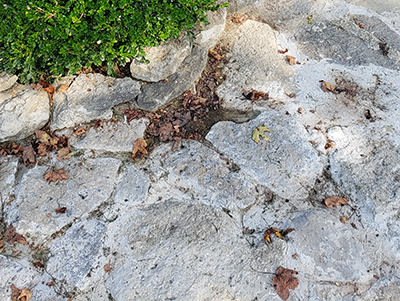

Turn your yard into a nature oasis
As issues like droughts become more and more common, and the bee population becomes threatened, green lawns become a great way to help the plant. A green lawn is great for cutting down on the amount of water your yard uses. They also can be a lot less maintenance that a grass yard as a green yard doesn’t need cut and doesn’t require watering as often. We offer two different options, hardscaping, or a full wildflower meadow. For both options we can either come in and do it for you or guide you through the steps needed to complete either option.
Hardscaping
If you live in an area with little rain fall, hardscaping is a great option for you. We replace your grass with decorative stone. We then plant local plants that do not require lots of watering or care. This is a great option for those places like Arizona where watering the grass is needed. It is also a great option if you live somewhere that might disallow a full meadow.
Wildflower Medows

A meadow is a great option if you have a lot of land that you don’t mind having wildflowers in. It provides a great place for bees and other pollinators to live, helping protect the number that are alive in the wild. While this option might take a little to grow in and look appealing, once it does, it requires little work, only needed cut about once a year.
How we can help
If you make the choice to do any yard renovations yourself, we can offer guidance to help you get through it. For meadows we offer soil analyze services, where you can send in a sample of your soil and we will tell you what needs to be done before you plant. We offer a selection of seeds in our store, depending on the season, but if you contact us we can make you a custom blend for your yard. For hardscaping, we recommend trying to find a local suppler for rocks, as shipping would be expensive, but we do offer a small selection of rocks that make good pathing stones.
Contact us below
Feel free to contact us if you want an estimate, or if you need guidance on making your lawn green yourself.